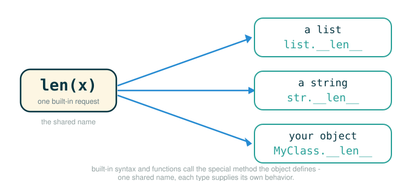

2.7 Special Methods
By the end of this lesson you will be able to do four things. You will explain what a special method is and why Python calls it for you. You will read ordinary Python syntax such as len(x), x[i], x(...), and x + y as hidden method calls. You will write your own classes that respond to those built-in operations by defining methods whose names begin and end with two underscores. And you will trace, step by step, what happens when Python translates a piece of syntax into a method call on one of your objects.
You already met three of these methods in the previous packet: __init__ runs when an object is constructed, __str__ runs when you print, and __repr__ runs when an interactive session displays a value. This lesson shows that those three are not special cases. They are part of a single, consistent design where Python syntax is a readable surface over method calls.
Special Names the Interpreter Calls for You
In Python, a handful of method names are reserved so that the interpreter can call them automatically in particular situations. These names begin and end with two underscores, which is why programmers often pronounce them "dunder" names, short for "double underscore." You do not usually call them yourself; you define them, and Python invokes them when the matching syntax appears.
The figure below shows how a piece of built-in syntax is dispatched to the matching special method on an object.

__init__ runs when an object is constructed
__repr__ runs to display a value in an interactive session
__str__ runs when a value is printed
__bool__ runs to determine an object's truth value
__len__ runs to determine an object's length
__getitem__ runs to select an element by index
__call__ runs to call an object like a function
__add__ runs to add this object to another
__radd__ runs to add another object to this one from the rightThe single idea behind all of them is this:
ordinary syntax is translated into a method callHere is the same idea spelled out for the constructs in this lesson. Read each line as "the syntax on the left causes the method call on the right."
bool(x) asks x.__bool__()
len(x) asks x.__len__()
x[i] asks x.__getitem__(i)
x(...) asks x.__call__(...)
x + y asks x.__add__(y), then possibly y.__radd__(x)The rest of this lesson takes those buttons one at a time. For each one you will see the syntax, the method it triggers, and a class that defines the behavior.
Truth Values and __bool__
Python lets you put any object in a position where a true-or-false answer is needed:
if object:
while object:
not object
bool(object)By default, an instance of a class you write is considered true. The special method __bool__ lets a class override that default and decide its own truth value. If an object defines __bool__, Python calls that method whenever it needs the object's truth value.
The official example uses a bank account: an account should count as false when its balance is zero. To run the example we first need a small Account class. Here is a warm-up version, defined the ordinary way, so the rest of the example has something to attach to.
# (1)
class Account:
interest = 0.02
def __init__(self, account_holder):
self.holder = account_holder
self.balance = 0
def deposit(self, amount):
self.balance = self.balance + amount
return self.balance
Now we give this class a truth value. Instead of writing the method inside the class body, the official text attaches it afterward, by assigning a lambda to the class attribute __bool__. This is a compact way to add one method to a class that already exists.
# (2)
class Account:
interest = 0.02
def __init__(self, account_holder):
self.holder = account_holder
self.balance = 0
def deposit(self, amount):
self.balance = self.balance + amount
return self.balance
Account.__bool__ = lambda self: self.balance != 0
print(bool(Account('Jack')))
if not Account('Jack'):
print('Jack has nothing')
Expected output:
False
Jack has nothingFollowing the Assignment Line
The line that gives Account its truth value is worth reading token by token. It is an assignment statement, so the final branch states the action it performs rather than a value it evaluates to.
Account.__bool__ = lambda self: self.balance != 0
├─ Account ........... look up the class object named Account
├─ . ................. reach for an attribute on that class
├─ __bool__ .......... the special name Python calls for truth testing
├─ = ................. bind that class attribute to a function
├─ lambda self: ...... build a one-expression function taking the instance
├─ self.balance ...... look up the balance attribute on that instance
├─ != ................ compare the two sides for "not equal"
├─ 0 ................. the integer zero
└─ action: from now on, bool(account) returns whether balance is nonzeroSo once that line runs, every Account answers the truth-value button with the rule:
Tracing bool(Account('Jack'))
The expression bool(Account('Jack')) is small but it touches construction, attribute lookup, and method dispatch, so it is worth a careful trace.
1. Evaluate Account('Jack'): construct a new Account instance.
2. __init__ runs: set holder to 'Jack' and balance to 0.
3. bool(...) needs a truth value, so Python calls __bool__ on the instance.
4. __bool__ evaluates self.balance != 0, which is 0 != 0, which is False.
5. The whole expression bool(Account('Jack')) is therefore False.The if not Account('Jack'): line repeats steps 1 through 4 to get False, then not False is True, so the body runs and prints Jack has nothing.
Sequence Operations: __len__ and __getitem__
Two operations show up constantly when you work with sequences:
len(sequence)
sequence[index]Both translate into special method calls. Built-in types such as strings already define these methods, which is why you can call the dunder names on a plain string and watch the translation directly. The official transcript does exactly that, using the string 'Go Bears!'.
# (3)
message = 'Go Bears!'
print(len(message))
print(message.__len__())
print(message[3])
print(message.__getitem__(3))
print(bool(''))
print(bool([]))
print(bool('Go Bears!'))
Expected output:
9
9
B
B
False
False
TrueThis is the interactive session as it appears in the source, including the matching outputs:
>>> len('Go Bears!')
9
>>> 'Go Bears!'.__len__()
9
>>> bool('')
False
>>> bool([])
False
>>> bool('Go Bears!')
True
>>> 'Go Bears!'[3]
'B'
>>> 'Go Bears!'.__getitem__(3)
'B'Following the Indexing Line
The bracket form 'Go Bears!'[3] is the one most worth dissecting, because the brackets are pure surface syntax for a method call.
'Go Bears!'[3]
├─ 'Go Bears!' ....... the string value being indexed
├─ [ ................. begin an index lookup, which calls __getitem__
├─ 3 ................. the index argument passed to __getitem__
├─ ] ................. end the index lookup
└─ evaluates to ...... 'B'Python uses zero-based indexing, so position 3 is the fourth character. Counting from zero makes the answer concrete:
index: 0 1 2 3 4 5 6 7 8
chars: G o B e a r s !Index 3 lands on 'B', which is why both message[3] and message.__getitem__(3) return 'B'.
Length as a Truth Value
The three bool(...) calls in the transcript show a connection between length and truth. When an object does not define __bool__, Python falls back to its length: an object whose length is zero counts as false, and an object with any length counts as true.
That rule explains the outputs. The empty string '' and the empty list [] have length zero, so both are false. The string 'Go Bears!' has length nine, so it is true. This is the same machinery from the Account example seen from the other side: __bool__ gives the first answer if it exists, and __len__ provides a fallback answer if it does not.
Callable Objects and __call__
You already know that functions are values in Python. A function can be stored in a name, passed as an argument, and returned from another function. The classic example is a higher-order function that builds and returns a new function.
# (4)
def make_adder(n):
def adder(k):
return n + k
return adder
add_three = make_adder(3)
print(add_three(4))
Expected output:
7Here make_adder(3) returns the inner function adder, and that returned function remembers n as 3. Calling add_three(4) then computes 3 + 4, which is 7.
Python lets us build an object that behaves like a function too, by defining a __call__ method. When you write parentheses after an instance, Python translates that into a call to the instance's __call__ method. The official class is Adder, and the source writes the class header with an explicit object base class.
# (5)
class Adder(object):
def __init__(self, n):
self.n = n
def __call__(self, k):
return self.n + k
add_three_obj = Adder(3)
print(add_three_obj(4))
Expected output:
7Writing class Adder: would behave the same way in modern Python; the explicit class Adder(object): form makes the inheritance from Python's base object visible, which is why the source writes it that way.
Following the Call Line
The line add_three_obj(4) looks like a function call, but add_three_obj is an instance, not a function. The parentheses press the "behave like a function" button.
add_three_obj(4)
├─ add_three_obj .... an Adder instance whose n attribute is 3
├─ ( ................ begin a call, which on an instance calls __call__
├─ 4 ................ the argument bound to the parameter k
├─ ) ................ end the call
└─ evaluates to ..... 7So Adder(3) behaves like "a function that adds 3 to its argument." Two different mechanisms produce the same behavior here, and it is worth seeing where each one stores the remembered 3.
| Version | Where the 3 is stored |
|---|---|
make_adder(3) |
in the parent frame remembered by the returned function |
Adder(3) |
in the instance attribute self.n |
The two are alike in what they do but different in how the machine holds the data:
function closure -> remembers an enclosing environment
callable object -> stores state in instance attributesThis is what the source means when it says the line between data and functions is blurred. A callable object is data that also behaves like a function, and a closure is a function that also carries remembered data.
Arithmetic Operators: __add__ and __radd__
Special methods also define how built-in operators behave on objects you write. So that any operator can work on any pair of operands, Python follows a fixed protocol for each operator. For the + operator, the protocol checks both sides of the expression. To evaluate x + y, Python first checks for an __add__ method on the left operand x, and then, if needed, checks for an __radd__ method on the right operand y. The r in __radd__ stands for "right" or "reflected": it gives the right-hand object a chance to handle an addition that the left-hand object could not.
We will build up to the full protocol with a small bridge class you can check by hand, then state the complete two-method version.
A Bridge: Adding Two Objects
Start with the simpler half of the protocol. This Score class supports + between two Score objects by defining __add__. It also defines __repr__ so the results display readably.
# (6)
class Score:
def __init__(self, points):
self.points = points
def __repr__(self):
return 'Score({0})'.format(self.points)
def __add__(self, other):
return Score(self.points + other.points)
first = Score(10)
second = Score(7)
print(first + second)
print(first.__add__(second))
Expected output:
Score(17)
Score(17)The two print statements produce the same result on purpose. The first uses the operator, and the second calls the method directly, which makes the translation visible.
first + second
├─ first ............ the left operand, a Score whose points are 10
├─ + ................ the addition operator, which calls __add__ on the left
├─ second ........... the right operand, passed to __add__ as other
└─ evaluates to ..... Score(17)Because first.__add__(second) returns a new Score rather than a plain number, print then uses that new object's __repr__ to display Score(17).
The Full Protocol: Reflected Addition with __radd__
The bridge only handles the case where the left operand knows how to add. The complete protocol matters when the left operand does not. Consider 5 + Score(7): the left operand is an integer, and an integer has no idea how to add a Score. That is when __radd__ on the right operand earns its keep.
The class below uses the built-in isinstance(value, SomeClass), which returns True when value is an instance of that class. Here it lets each method ask whether the other operand is a Score or a plain int before deciding how to add. You will see isinstance again in a later packet.
# (7)
class Score:
def __init__(self, points):
self.points = points
def __repr__(self):
return 'Score({0})'.format(self.points)
def __add__(self, other):
if isinstance(other, Score):
return Score(self.points + other.points)
return NotImplemented
def __radd__(self, other):
if isinstance(other, int):
return Score(other + self.points)
return NotImplemented
print(Score(7) + Score(5))
print(5 + Score(7))
Expected output:
Score(12)
Score(12)The first print statement takes the ordinary left-side path. The expression Score(7) + Score(5) calls Score(7).__add__(Score(5)), and because the right operand is a Score, that method returns Score(12).
The second print statement takes the reflected path. For 5 + Score(7), Python first checks the left operand: it asks the integer 5 whether it knows how to add a Score. It does not, so the integer's __add__ reports that it cannot handle this case. Python then gives the right operand its turn and calls Score(7).__radd__(5), which checks that 5 is an int and returns Score(12).
The value NotImplemented is the polite way a method says "I do not handle this other type." It is not the same as raising an error and it is not the same as the boolean False. Returning NotImplemented is what lets Python move on and try the reflected method instead of giving up. Later sections use exactly this protocol so that rational numbers and complex numbers can be combined with + and * just like built-in numbers.
Tracing the Two Additions
Putting the dispatch side by side makes the difference clear.
Score(7) + Score(5)
1. Check the left operand: call Score(7).__add__(Score(5)).
2. other is a Score, so return Score(7 + 5) = Score(12).
5 + Score(7)
1. Check the left operand: ask int 5 to add a Score. It cannot.
2. Check the right operand: call Score(7).__radd__(5).
3. other is an int, so return Score(5 + 7) = Score(12).⚠Common Beginner Traps
Trap 1: Calling special methods directly out of habit. Writing 'Go Bears!'.__len__() is fine for learning and proves the translation is real, but normal code uses len('Go Bears!'). The special method is the machinery; the built-in operation is the interface you actually use.
Trap 2: Leaving out self. A special method is still a method. __call__(self, k) needs self as its first parameter, because the instance is always passed in first, just like in any other method. Writing def __call__(k): instead raises TypeError: __call__() takes 1 positional argument but 2 were given the moment the instance is called, because Python passes the instance and the argument while the method declares room for only one.
Trap 3: Believing every false object is literally False. An empty string is a string, not the boolean False. Its truth value is false because its length is zero, but '' is False is not true. Truth value and identity are different questions.
Trap 4: Assuming x + y only ever calls x.__add__(y). When the left operand cannot handle the addition, Python falls back to the right operand's __radd__. Both operands can participate in the protocol.
Trap 5: Confusing NotImplemented with an error or with False. Returning NotImplemented is a signal to the interpreter to try another method. Raising an exception stops the program, and returning False would be a wrong answer rather than a request to keep trying.
✓Check Your Understanding
- Using the second
Scoreclass (the one with both__add__and__radd__), what does10 + Score(3)evaluate to, and which method completes the addition? - Why does
Adder(3)(4)make sense even thoughAdder(3)returns an object rather than a function? - In the first
Scoreexample, why doesfirst + seconddisplay asScore(17)rather than as a plain number? - Why does
5 + Score(7)needScore.__radd__rather thanScore.__add__? - What does returning
NotImplementedfrom__add__accomplish, and how is it different from raising an error?
Show the answers
- It evaluates to
Score(13). The left operand is the integer10, which does not know how to add aScore, so Python calls the right operand'sScore.__radd__(10); that method checks that10is anintand returnsScore(10 + 3), which isScore(13). Adder(3)returns an instance that defines__call__. Writing parentheses after an instance triggers__call__, so the instance can be called like a function.Adder(3)(4)calls that method with4and returns7.first + secondcallsfirst.__add__(second), which returns a newScoreobject, not a number.printthen uses that object's__repr__, which produces the textScore(17).- The left operand is the integer
5, which does not know how to add aScore, so its__add__reports that it cannot handle the case. Python then calls the right operand's__radd__, which isScore.__radd__, to complete the addition. - Returning
NotImplementedtells Python that this method does not handle the given operand type, which lets Python try the reflected method on the other operand. Raising an error would stop the program instead of letting the operator protocol continue.
§Summary
Special methods let objects you write participate in Python's built-in syntax and functions. Each piece of familiar syntax is translated into a method call, and a class supplies the behavior by defining the matching dunder method:
bool(x)callsx.__bool__(), and if that is absent Python falls back to the length fromx.__len__().len(x)callsx.__len__().x[i]callsx.__getitem__(i).x(...)callsx.__call__(...).x + yfirst callsx.__add__(y), and if that returnsNotImplementedit callsy.__radd__(x).
The larger lesson is that Python syntax is a readable surface over method dispatch, which is what makes object abstraction work: callers press familiar buttons while each object decides its own behavior. In the next packet we use this same idea to build complex numbers that can be stored in more than one internal form while still supporting ordinary arithmetic.
▶Step-Through Checkpoint
This block is the lesson in miniature: an instance called like a function. The environment diagram shows where the "behave like a function" button leads: Adder(3) puts one instance on the heap with n bound to 3, the __init__ frame closes, and then the parentheses in add_three_obj(4) open a __call__ frame whose self points back at that same heap object while k binds 4. Before you step through the block below, write down three predictions: how many frames will open for method calls, which names each of those frames will bind, and whether self in the second frame is the same object as in the first.
# (8)
class Adder(object):
def __init__(self, n):
self.n = n
def __call__(self, k):
return self.n + k
add_three_obj = Adder(3)
add_three_obj(4)
Step through it and check each prediction as the frames appear. Two frames open: one for __init__, binding self and n, then one for __call__, binding self and k. In both, self is the same instance the global frame names add_three_obj, so the last line dispatches through plain parentheses to a method that computes 3 + 4 and returns 7.